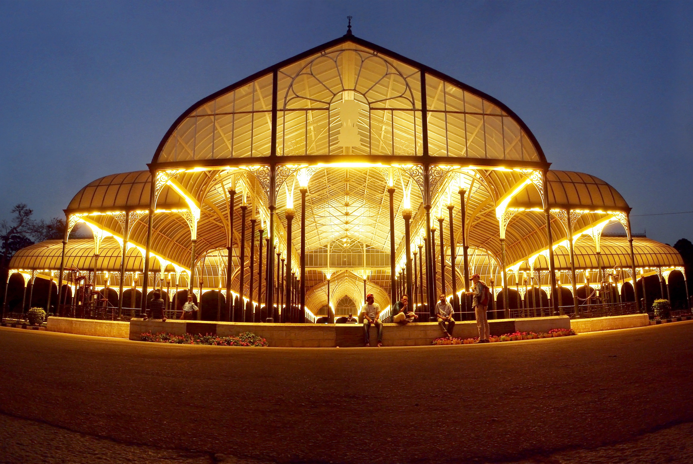
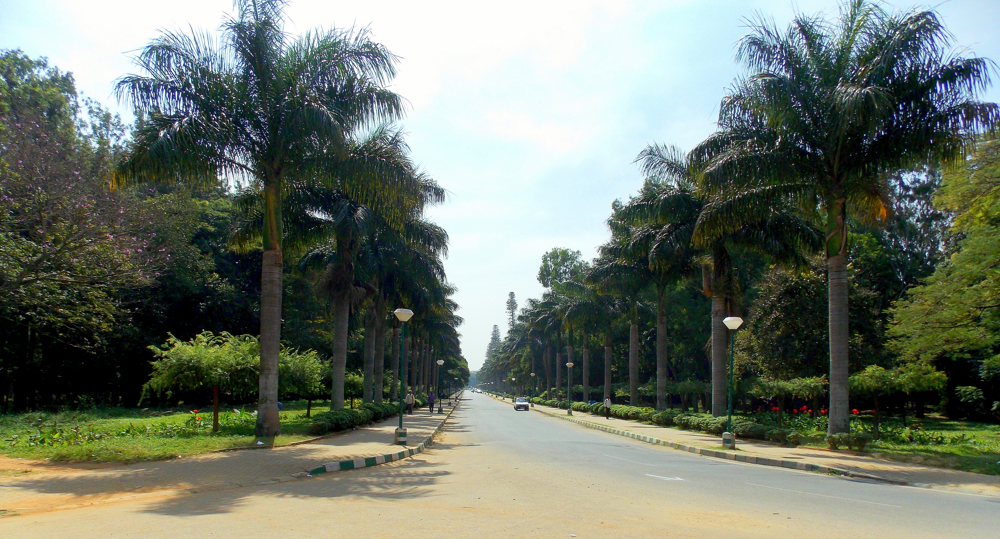
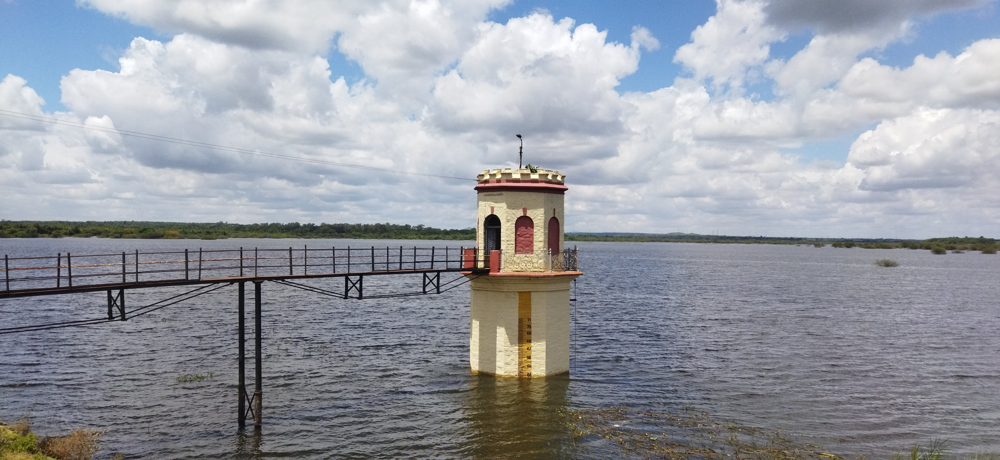
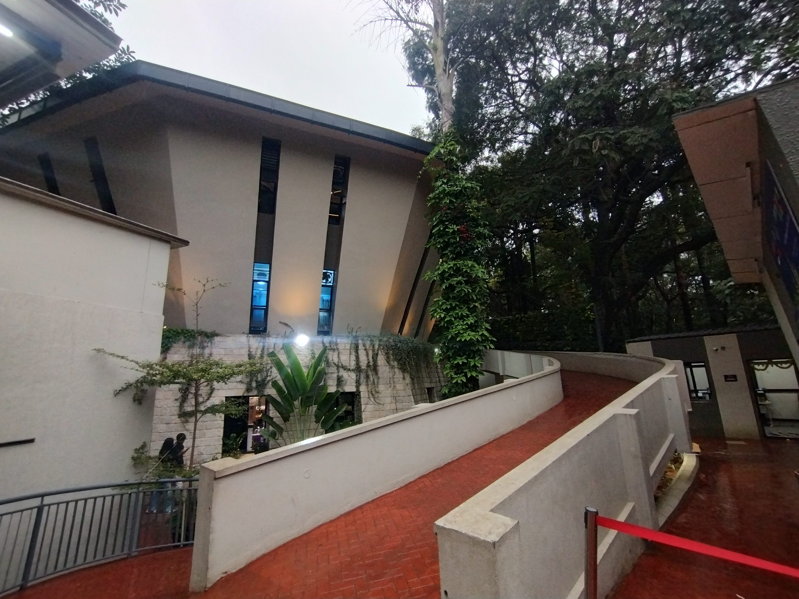
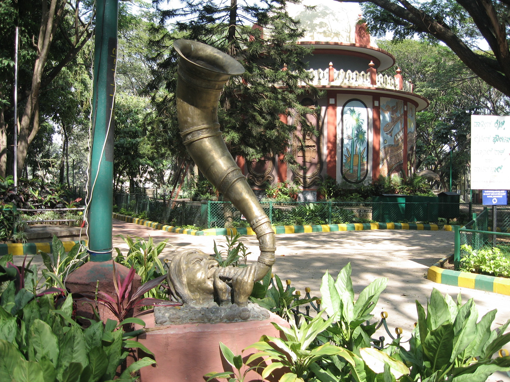
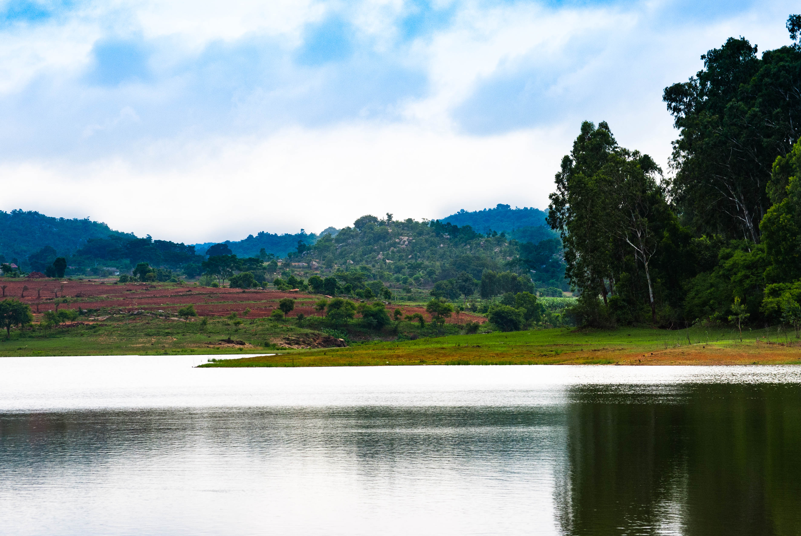
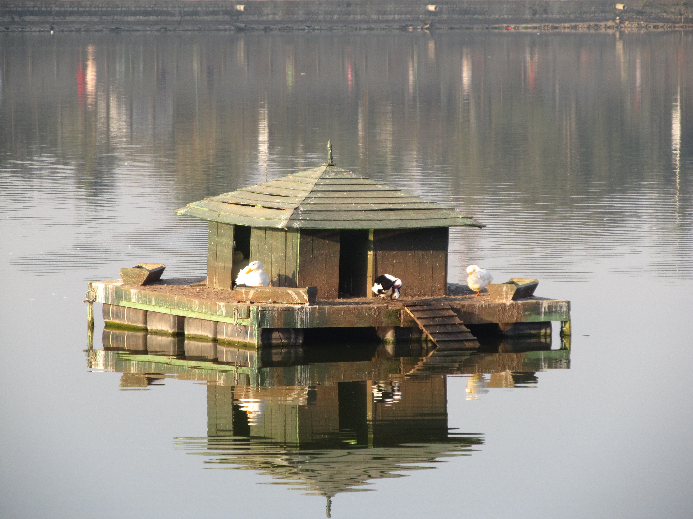
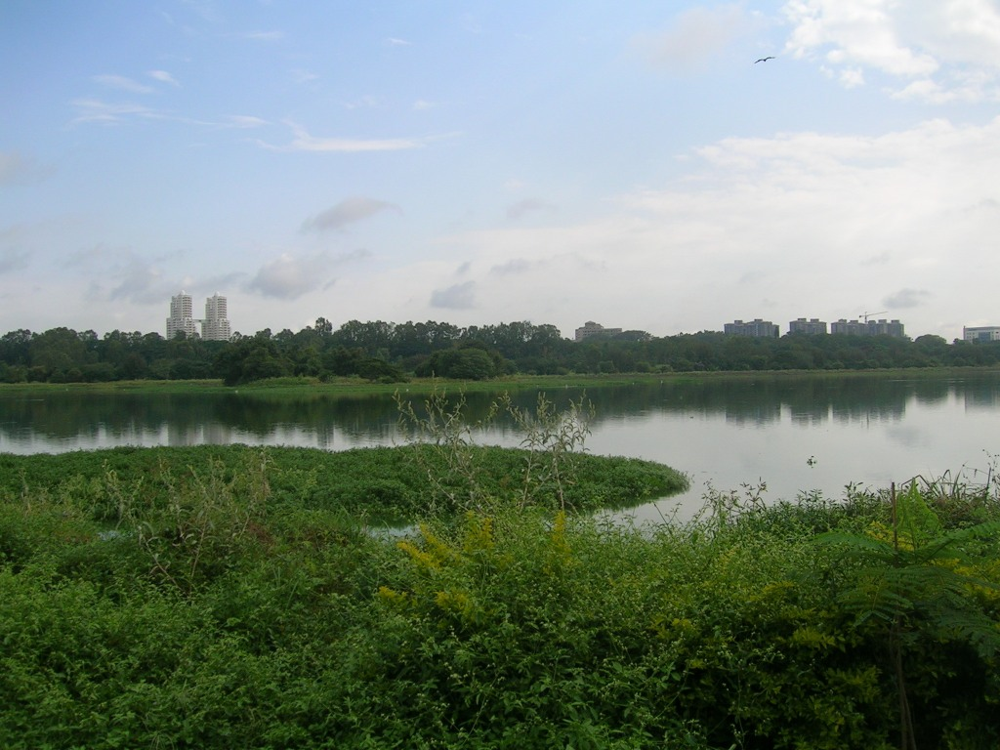

Wildlife & Nature Attractions
Click any landmark card below to open an interactive view with multiple photos, history, timings, and visiting details.

Bannerghatta Biological Park
A 731-hectare park featuring a zoo, safari, butterfly conservatory, and rescue centre with Bengal Tigers and Asiatic Lions.
View Details & Gallery →
Lalbagh Botanical Garden
A historic botanical garden known for its diverse plant collections, ancient rock formation, lake, and Victorian Glass House.
View Details & Gallery →
Cubbon Park
A 300-acre green oasis in the city centre with thousands of trees, walking trails, and heritage buildings.
View Details & Gallery →
Hesaraghatta Lake
A scenic natural area near Bengaluru known for birdwatching, grasslands, photography, and its historic lake landscape.
View Details & Gallery →
Bengaluru Aquarium
One of Bengaluru's well-known aquatic attractions, featuring a variety of freshwater fish and aquatic life.
View Details & Gallery →
Bugle Rock
A historic natural rock formation and green space in Basavanagudi, known for its rocky landscape and mature trees.
View Details & Gallery →
Thattekere Lake
A scenic lake surrounded by natural landscape, offering a peaceful setting for nature and landscape photography.
View Details & Gallery →
Dodda Alada Mara
One of Bengaluru's historic lakes, known for its broad waterscape, islands, and greenery in the heart of the city.
View Details & Gallery →
Sankey Tank
A scenic urban lake in Bengaluru surrounded by greenery, walking areas, and a rich variety of birdlife.
View Details & Gallery →
Hebbal Lake
A well-known lake in northern Bengaluru, valued for its wetlands, greenery, and opportunities for birdwatching.
View Details & Gallery →